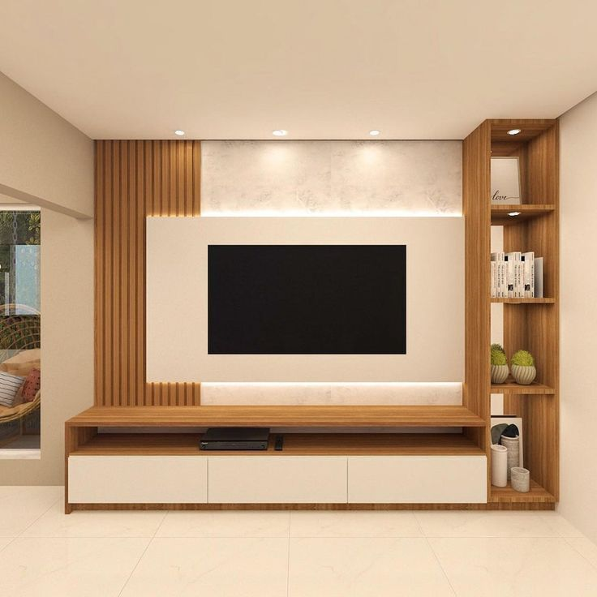

A considered living-room centre
We design TV units around the proportions and storage needs of your space, creating a cohesive furniture feature rather than an afterthought.
RK Furniture & Interiors · Bangalore
A refined focal point for the living room that keeps technology, storage and visual balance beautifully in place.

We design TV units around the proportions and storage needs of your space, creating a cohesive furniture feature rather than an afterthought.